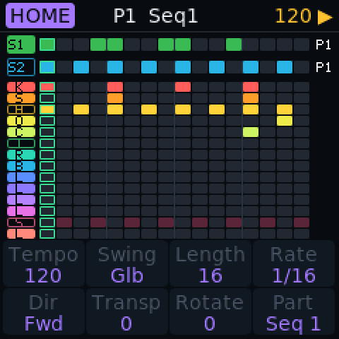
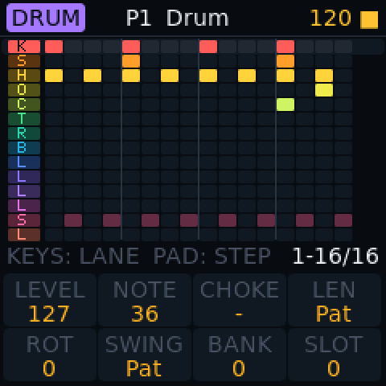
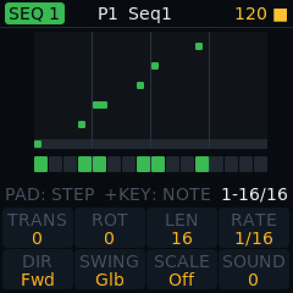
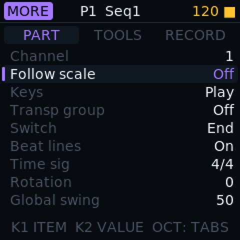
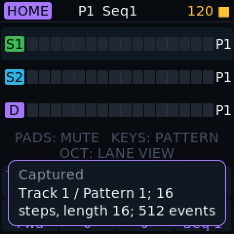

Sequencer
Built to perform with.
Two melodic parts and a drum part, each with eight patterns. Three screens, and the one you perform on keeps your hands on the pads.
What it does
- 1
Three parts Test build
Seq1 and Seq2 for melody, and a drum part with 14 lanes. Each part has 8 patterns of up to 64 steps.
- 2
HOME: perform Test build
Pads mute and unmute lanes and parts, white keys pick patterns, and changes can wait for the bar or the end of the pattern.
- 3
EDIT: steps Test build
Pads are steps. Hold one and the knobs edit that step: velocity, gate, probability, ratchet, micro-timing, condition and a filter lock.
- 4
Record how you like Test build
Live or step by step, overdub or overwrite, quantise on or off, with a one or two bar count-in.
- 5
Tools Test build
Clear, Copy, Euclid fill and Randomize, each confirmed with one tap, with one level of undo and redo.
- 6
Choke groups Test build
Put open and closed hats in the same group and one cuts the other.
- 7
Capture Test build
Played something good without recording? Press Globe and SEQ REC and the last phrase becomes a pattern.
- 8
One clock Test build
The sequencer, the arp and Note Repeat share one tempo, from the keyboard or from a computer over USB.
On the screen




